ECCV 2026 Camera Ready
EvoWorld: A World-Model-Centric Framework for Continuous Self-Evolution of Modular Embodied Skills
Reusable world dynamics, modular skill routing, and VLM feedback for continual embodied skill improvement.
1Tsinghua University 2University of Oxford 3University of Sussex 4Beijing Jiaotong University 5Xiamen University 6East China Normal University

Abstract
A modular route to self-evolving embodied skills.
Current progress in physical intelligence largely relies on scaling monolithic Vision-Language-Action models, yet real-world policy data remain fragmented across scenes and tasks. EvoWorld addresses this mismatch with a modular framework that shares world dynamics while routing specialized skills.
In EvoWorld, VLAs form an expandable library of pluggable experts. A router selects experts conditioned on scene and task, an action-conditioned video world model provides counterfactual rollouts, and a VLM evaluator returns semantic scores plus diagnostic tags. The loop updates the world model, router memory, or selected experts without global retraining.
Method
Ground, route, imagine, diagnose.
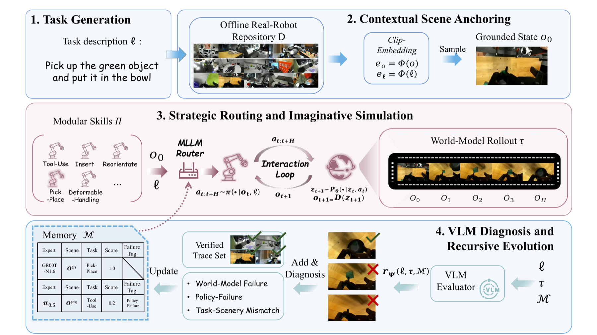
Results
Consistent gains across policies and task families.
Pick-and-place, tool-use, reorientation, deformable manipulation, and articulation.
Base policies are compared with routed EvoWorld variants under matched splits.
Task language, scene embeddings, FID/FVD, and temporal consistency are evaluated.
Five real-robot tasks with 20 trials per task test transfer beyond imagined rollouts.
| Backbone | Setting | S1 | S2 | S3 | S4 | S5 | Avg | Gain |
|---|---|---|---|---|---|---|---|---|
| GR00T-N1.6 | Base | 0.38 | 0.24 | 0.18 | 0.28 | 0.20 | 0.256 | -- |
| EvoW* | 0.48 | 0.50 | 0.46 | 0.42 | 0.48 | 0.468 | +82.8% | |
| PI-0.5 | Base | 0.32 | 0.14 | 0.24 | 0.18 | 0.28 | 0.232 | -- |
| EvoW* | 0.48 | 0.28 | 0.38 | 0.44 | 0.48 | 0.412 | +77.6% | |
| PI-0 | Base | 0.40 | 0.22 | 0.26 | 0.32 | 0.22 | 0.284 | -- |
| EvoW* | 0.62 | 0.38 | 0.40 | 0.40 | 0.50 | 0.460 | +62.0% | |
| PI-0-fast | Base | 0.38 | 0.18 | 0.26 | 0.24 | 0.26 | 0.264 | -- |
| EvoW* | 0.66 | 0.38 | 0.44 | 0.36 | 0.42 | 0.452 | +71.2% |
Takeaway. Averaged over backbones, success rate rises from 0.259 to 0.448 (+18.9 absolute points). Relative gains remain stable across backbones, ranging from +62.0% to +82.8%.
Skill-Level Performance
Routing gives immediate gains; diagnosis-driven refinement raises later-stage SR.
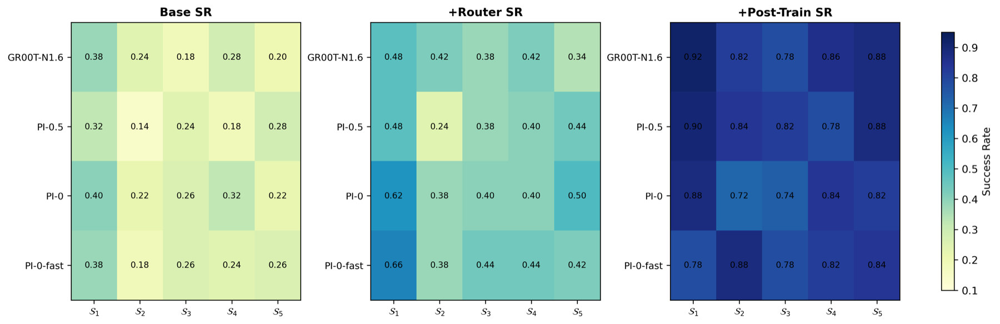
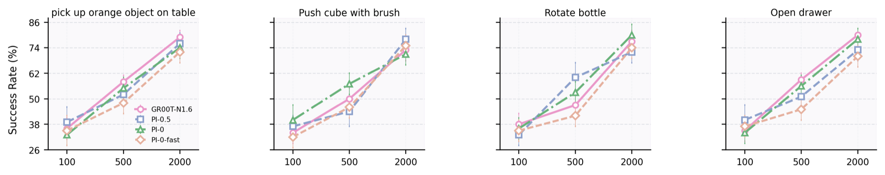
Long-Horizon and Generation
Cross-skill tasks and rollout quality both improve under EvoWorld.
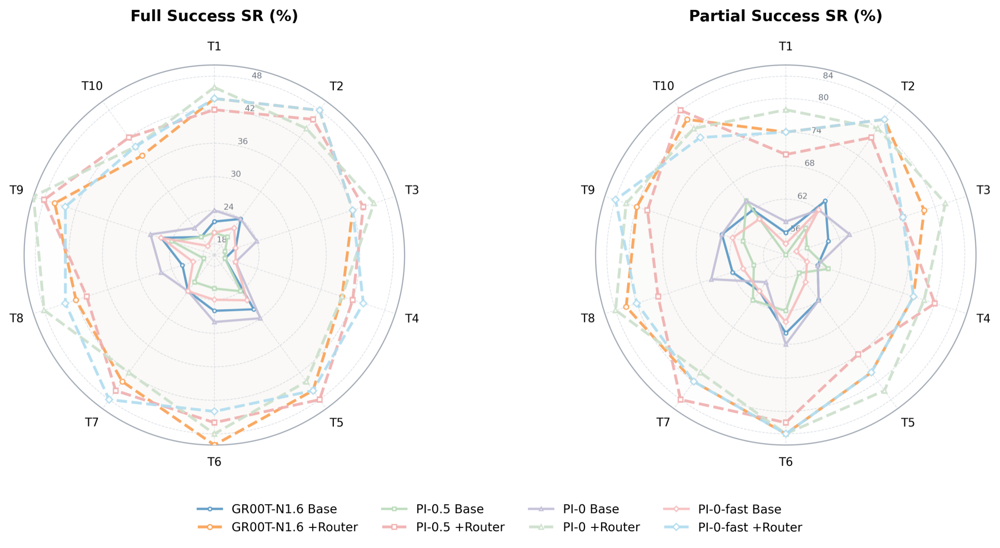
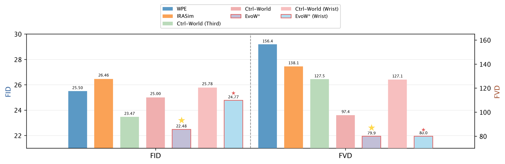
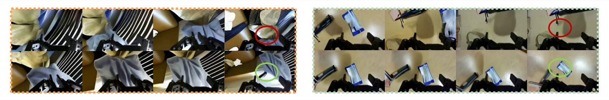
Task and Scene Diversity
Generated tasks stay diverse while preserving grounded executability.
| Metric | EvoW | RoboGen | Behavior-100 | RLBench | MetaWorld | ManiSkill2 | GenSim |
|---|---|---|---|---|---|---|---|
| Number of tasks | 100 | 106 | 100 | 106 | 50 | 20 | 70 |
| Task description Self-BLEU | 0.281 | 0.284 | 0.299 | 0.317 | 0.322 | 0.674 | 0.378 |
| Task description Sentence-BERT similarity | 0.312 | 0.165 | 0.210 | 0.200 | 0.263 | 0.194 | 0.288 |
| Scene image ViT similarity | 0.337 | 0.193 | 0.389 | 0.375 | 0.517 | 0.332 | 0.717 |
| Scene image CLIP similarity | 0.754 | 0.762 | 0.833 | 0.864 | 0.867 | 0.828 | 0.932 |
Real-World Validation
Franka-arm trials transfer the gains to hardware.
Using GR00T-N1.6, EvoWorld is evaluated on five real-robot tasks with 20 trials per task. Average SR improves from 29% to 70%, and every task improves over the monolithic base policy.
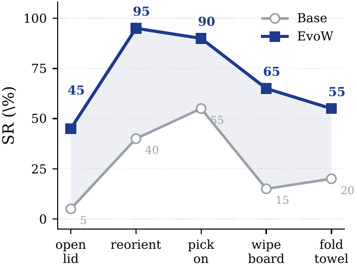
Demos
Real-robot traces and imagined rollouts.
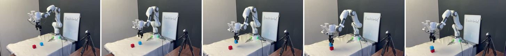
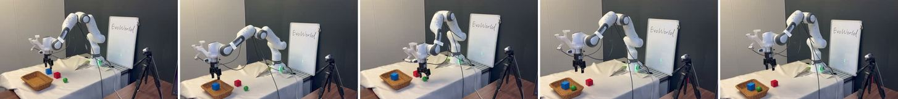
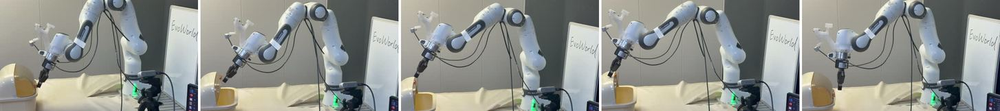
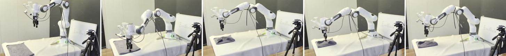
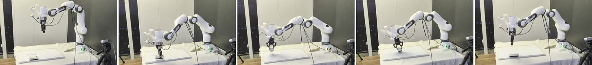
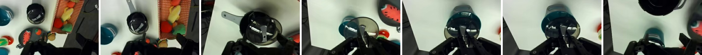
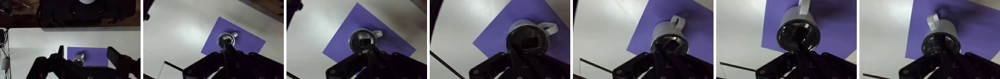
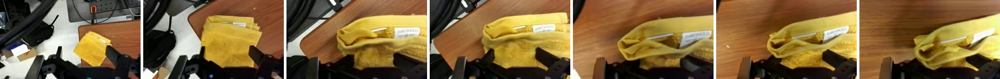
Citation
BibTeX
@inproceedings{zhang2026evoworld,
title={EvoWorld: A World-Model-Centric Framework for Continuous Self-Evolution of Modular Embodied Skills},
author={Boshi Zhang and Sen Cui and {BaoHuaYin} and Youyi Kou and Junyu Wu and Zuo Pu and Tao Xue and Zhikang Chen and Shanshan Wei and Min Zhang and Miao Liu and Changshui Zhang and {Zhang Tao}},
booktitle={European Conference on Computer Vision},
year={2026}
}